PRO provides an ontological representation of protein-related entities and their relationships. Each PRO term represents a distinct class of organism-neutral or organism-specific entities (e. g. modified forms, orthologous isoforms, and protein complexes).
PRO Uniform Resource Identifiers (URIs)
PRO follows the rule of reusing existing identifiers whenever feasible. e.g., <http://purl.obolibrary.org/obo/GO_0032991> (Gene ontology), <http://purl.obolibrary.org/obo/RO_0002160"> (Relations Ontology) etc. The format of PRO identifier is "PR_xxxxxxxxxx", e.g., <http://purl.obolibrary.org/obo/PR_00000000001>. However, for UniProtKB entires incorporated into PRO 'organism-gene' category, we use the UniProt accession number and prefixed it with "PR_" as its corresponding PRO identifier. e.g., <http://purl.obolibrary.org/obo/PR_P00015>.
Types of PRO Terms
Category=family
Each PRO term at family level refers to protein products of a distinct gene family arising from a common ancestor. The leaf-most nodes at this level are usually families comprising paralogous sets of gene products (of a single or multiple organisms). For example, smad2 and smad3 both encode proteins that are TGF receptor-regulated while smad1, smad5, and smad9 are all BMP receptor-regulated. Thus, "TGF-beta receptor-regulated smad protein" and "BMP receptor-regulated smad protein" are terms denoting distinct families. Note that this level collectively refers to any such grouping at any level of similarity. For example, the two families indicated above can merge into a "receptor-regulated smad protein" class and further merge (with the protein products of smad4, smad6, and smad7) into the "smad protein" class. An example of organism non-specific PRO family term PR:000000027 is shown below in RDF Graph, RDF/XML and Turtle formats.
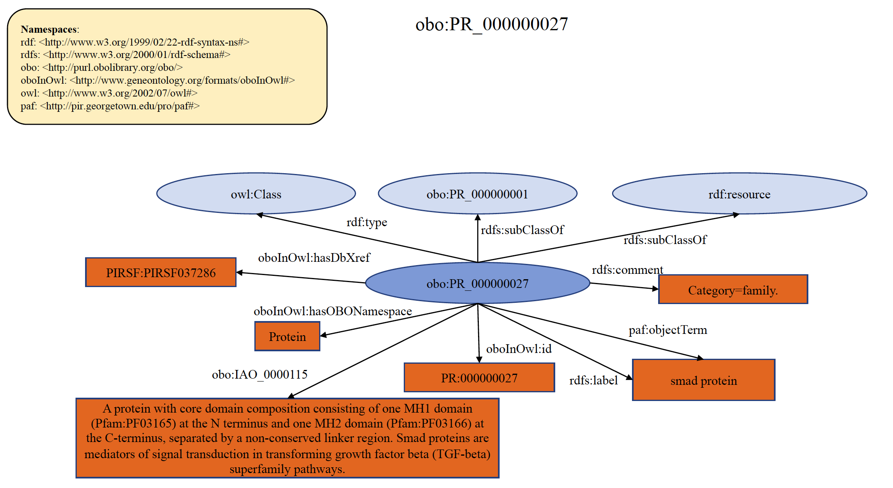
An example of organism-specific PRO family term PR:000044507 is shown below in RDF Graph, RDF/XML and Turtle formats.
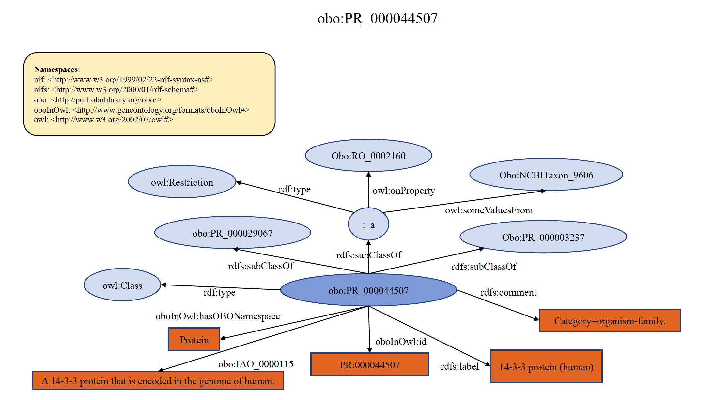
Category=gene
Each PRO term at gene level refers to the protein products of a distinct gene in a reference organism and the orthologs thereof. For example, "smad2" and "smad3" are two different genes, and therefore have two different PRO entries at the gene level of distinction. The protein products of what is recognized as smad2 in humans and what is recognized as smad2 in mouse fall under the single gene-level term “smad2”. Thus, a single term at the gene-level distinction collects the protein products of (usually 1-to-1) orthologs for that gene. Organism-specific versions are (typically) defined logically as the intersection of the parent (gene-level) and the organism (taxonomic) terms. If a resource provides gene information, PRO will indicate this using the has_gene_template relation. An example of organism non-specific PRO gene term PR:000000364 is shown below in RDF Graph, RDF/XML and Turtle formats.
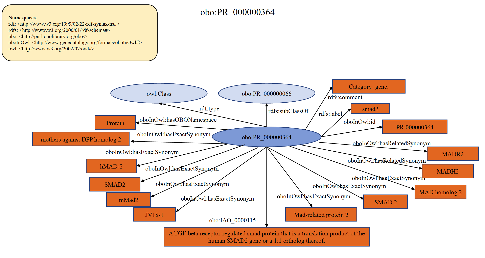
An example of organism specific PRO gene term PR:P05042 is shown below in RDF Graph, RDF/XML and Turtle formats.
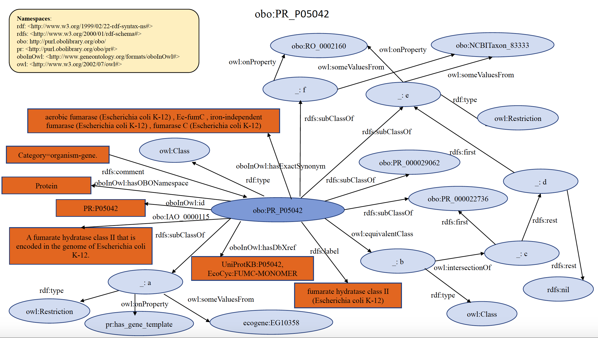
Category=seqgroup
Each PRO term at the seqgroup level refers to proteins encoded by the same gene that are distinguished from siblings based on differences in shared portions of encoding mRNAs. That is, all members of a given seqgroup are encoded by mRNAs that have a common subset of sequence features, either as a common subset of exons or as a common subset of sequence variations. Examples include proteins encoded by the PTPRC (CD45) gene, where each member of the CD45R subtype (CD45RA, CD45RAB, CD45RAC) minimally contains exon 4 (aka ‘A’) even while each member of a given subtype has other exons that make them distinct, and histocompatibility genes such as HLA-A, where each member of a given subtype (HLA-A*24, HLA-A*68, etc) shares a common set of variations even while each member of a given subtype has other variations that make them distinct. An example of organism non-specific PRO sequence term PR:000050216 is shown below in RDF Graph, RDF/XML and Turtle formats.
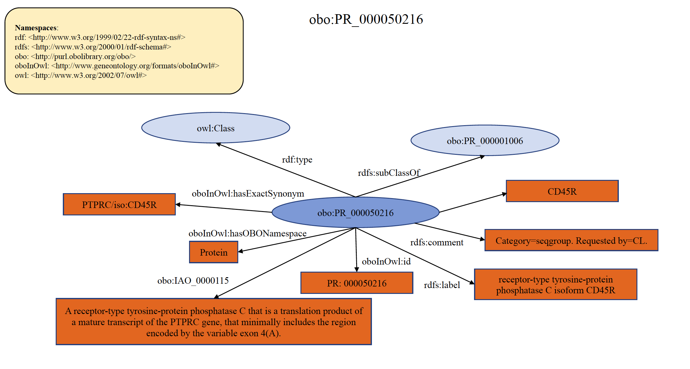
An example of organism specific PRO seqgroup term PR:Q9ULB1 is shown below in RDF Graph, RDF/XML and Turtle formats.
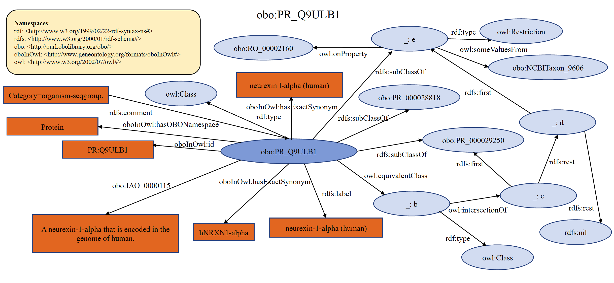
Category=sequence
Each PRO term at sequence level refers to the protein products of a gene with a distinct sequence upon initial translation. The sequence differences can arise from different alleles of a given gene (sequence variants), from splice variants of a given RNA, or from alternative initiation and ribosomal frameshifting during translation. One can think of this as a mature mRNA-level distinction. For example, smad2 encodes both a long splice form and a short splice form. The protein products of each isoform are separate PRO terms. If there is clear knowledge on the equivalency of isoforms (that is, they are “ortho-isoforms”), then the equivalent terms from different organisms are defined as children of the sequence level terms. For example, ARF GTPase-activating protein GIT1 isoform 1 from mouse (PR:Q68FF6-1), ARF GTPase-activating protein GIT1 isoform 1 from rat (PR:Q9Z272-1), and ARF GTPase-activating protein GIT1 isoform 3 from human (PR:Q9Y2X7-3) are ortho-isoforms that are children of the sequence level term PR:000044155. If the equivalency of isoforms is not well-established, the organism-sequence term is defined as a child of the organism-gene level term. An example of organism non-specific PRO sequence term PR:000000048 is shown below in RDF Graph, RDF/XML and Turtle formats.
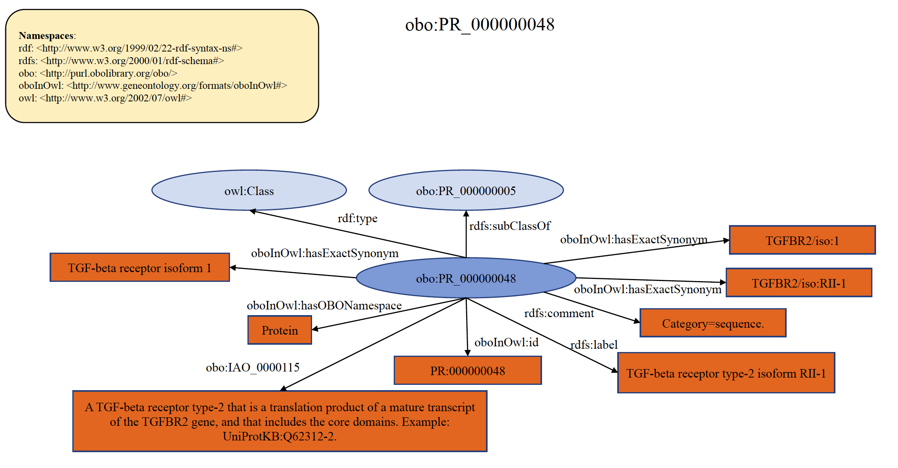
An example of organism specific PRO seqeunce term PR:Q68FF6-1 is shown below in RDF Graph, RDF/XML and Turtle formats.
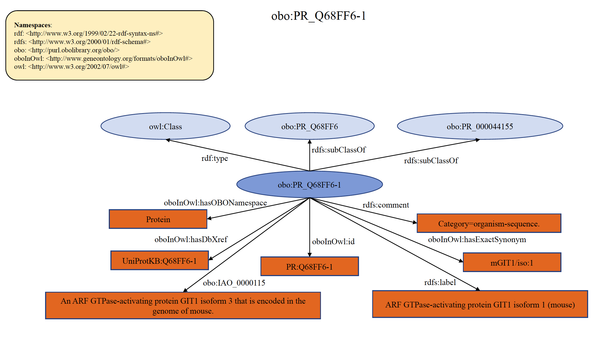
Category=modification
Each PRO term at this level refers to the protein products derived from a single mRNA species that differ because of some change (or lack thereof) that occurs after the initiation of translation (co- and post-translational). This includes sequence differences due to cleavage and chemical changes to one or more amino acid residues. In general, PRO does not provide time or space information, i.e., the order in which modifications occur or the location in which they are found unless such are required to properly define the term. PRO only represents the final modified objects, which are relevant for function. If there is clear knowledge on the equivalency of the modified forms from different organisms, then the equivalent terms are defined as children of the modification level terms. For example, RAC-alpha serine/threonine-protein kinase phosphorylated 3 from human (PR:000046294) and mouse (PR:000049940) are ortho-modified forms that are phosphorylated on the position equivalent to Ser-473 of the human protein. In the PRO hierarchy, they are children of the modification level term PR:000049939. If the equivalency of the modified forms is not well-established, the organism-modification term is defined as a child of the organism-gene level. An example of organism non-specific PRO modification term PR:000049939 is shown below in RDF Graph, RDF/XML and Turtle formats.
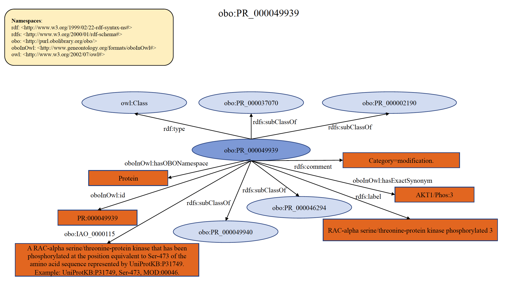
An example of organism specific PRO modification term PR:000046294 is shown below in RDF Graph, RDF/XML and Turtle formats.
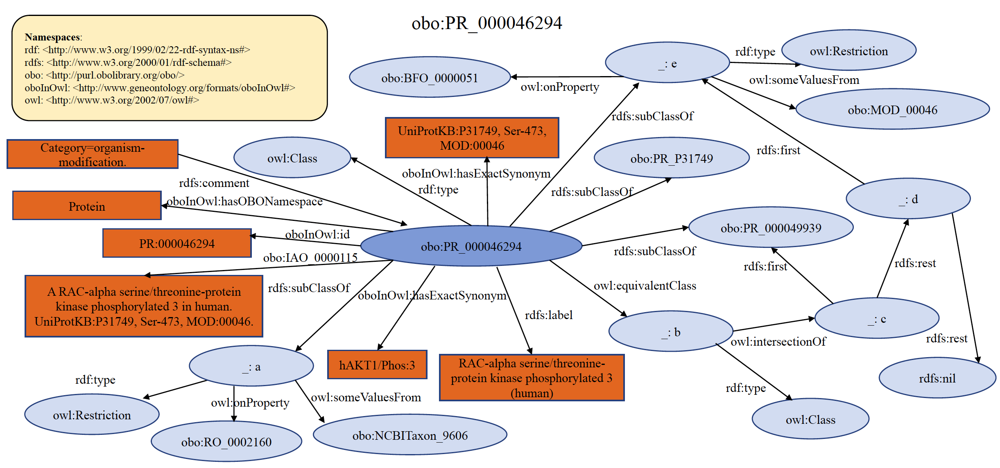
Category=complex
Each PRO term at the complex level ultimately traces to the general term "protein-containing complex" found in GO (GO:0032991), defined as "A stable assembly of two or more macromolecules, i.e. proteins, nucleic acids, carbohydrates or lipids, in which at least one component is a protein and the constituent parts function together". Indeed, complex-level terms in PRO are imported from GO whenever possible. However, because GO complexes are (predominantly) defined with respect to function, PRO will create complex terms when a component-specific definition is desired. When doing so, PRO represents complexes explicitly--that is, by subunit composition--defining each member of the complex at the level of its isoform, variant, or modified form, whenever possible. Most complex-related terms defined by PRO are species-specific. Note that a protein in its monomeric state, linked non-covalently to a small chemical, is not considered a protein complex by the above definition, but it can be defined as a subclass of the protein term using the CHEBI ID for the small chemical and the relation “non-covalently_bound_to”. An example of organism non-specific PRO complex term PR:000027291 is shown below in RDF Graph, RDF/XML and Turtle formats.
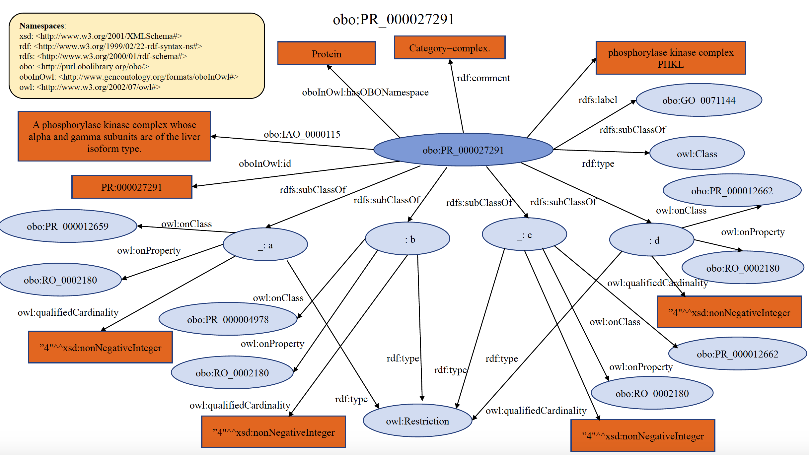
An example of organism specific PRO complex term PR:000036137 is shown below in RDF Graph, RDF/XML and Turtle formats.
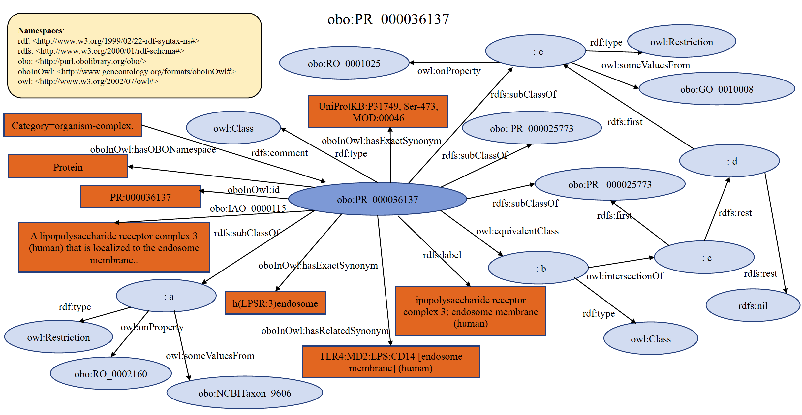